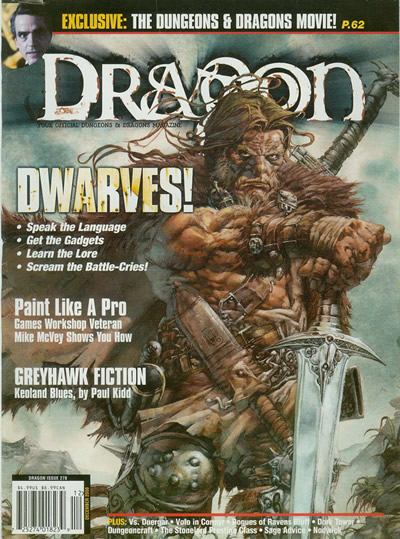
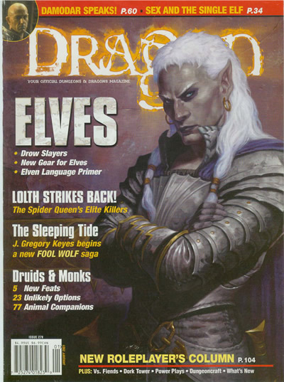

《巨龙志（Dragon）》3E部分目录（274-307）
各期主题：
期数 月份 主题
274 2000-08 谢伍德森林传奇
275 2000-09 异种战士
276 2000-10 创造怪物
277 2000-11 死亡与威胁：蒸汽时代
278 2000-12 矮人
279 2001-01 精灵
280 2001-02 奥术，术士
281 2001-03 灵能，心灵战士
282 2001-04 秘题，字谜
283 2001-05 神与牧师
284 2001-06 25周年，龙
285 2001-07 半身人
286 2001-08 Shannara战役
287 2001-09 位面
288 2001-10 恐惧，死神，坟墓
289 2001-11 东方冒险
290 2001-12 现实与虚幻，红海战役
291 2002-01 侏儒
292 2002-02 荒野生活
293 2002-03 世界创造
294 2002-04 神与半神
295 2002-05 城堡
296 2002-06 26周年，屠龙者
297 2002-07 传奇冒险
298 2002-08 卓尔：黑暗精灵
299 2002-09 荣耀战士：骑士与圣武士
300 2002-10 无尽之黯：邪恶与黑暗
301 2002-11 巷战：卑劣的战斗方式
302 2002-12 无尽之力：打开奥术之谜
303 2003-01 斗技场，血腥之路
304 2003-02 售剑者：扮演雇佣兵
305 2003-03 街头之血：在城市中幸存
306 2003-04 恶魔or圣徒？你能拒绝诱惑吗
307 2003-05 Westros的冒险：冰与火之歌
第274期《巨龙志》目录
游戏室
8 链甲
8 最近的肥皂剧
10 人物志
20 大事记
30 预览
专题
38 一颗骰子统治他们
42 游戏测试员的秘密
46 职业艺术
·神秘
49 D&D电影：
谢伍德森林传说
54·劫富济贫
58·狼头
62·巨大的森林
66·盗贼与国王
73 不可或缺
77 Plotbending
81 千面英雄
86 力量与荣耀
专栏
4 龙的回合
26 龙笑话
36 呆瓜塔
98 Nodwich漫画
100 生物大全
105 Volo的新冒险
109 夺心魔
132 有什么新的？
法师工作室
110 讨论版
114 PC头像
116 扮演模型
119 贤者的建议
124 地城建造
128 硅魔法
第275期《巨龙志》目录
游戏室
8 链甲
8 最近的肥皂剧
10 人物志
20 大事记
24 预览
专题
32 非同寻常的怀疑
38 如何设计专长
42 适合工作的正确工具
46 形形色色的灾难：道路与河流
48 应急纹章学
52 历史纹章学
62 上瘾
66 权威D&D CD音轨
72 唱歌的小鸟
专栏
4 龙的回合
30 呆瓜塔
82 Nodwich漫画
84 奥术学识
88 神奇百货店
92 Volo的新冒险
96 职业艺术
98 生物大全
106 对战
109 夺心魔
110 龙笑话
128 有什么新的？
法师工作室
37 PC头像
112 讨论版
116 扮演模特
118 贤者的建议
122 地城建造
126 硅魔法
第276期《巨龙志》目录
游戏室
10 链甲
10 最近的肥皂剧
12 人物志
20 大事记
24 预览
28 倒计时
专题
34 死亡和早餐
36 黑猫和破镜子
40 如何创造怪物
54 坎恩的命令
专栏
6 龙的回合
32 呆瓜塔
64 Nodwich漫画
68 生物目录
76 Volo的新冒险
80 职业艺术
82 对战
84 生物大全
92 龙笑话
97 夺心魔
114 有什么新的？
法师工作室
94 讨论版
100 扮演模型
102 PC头像
118 贤者的建议
122 地城建造
第277期《巨龙志》目录
游戏室
14 链甲
15 人物志
22 大事记
28 预览
38 倒计时
专题
43 蒸汽年代
48 灰鹰2000
55 未来奇幻
62 不寻常的嫌疑犯2：吟游诗人，术士和法师
68 你如何玩游戏
72 破晓的另一个名字
专栏
8 龙的回合
40 呆瓜塔
82 龙笑话
84 对战
86 神奇杂货店
92 Volo的新冒险
96 PC头像
98 职业
100 游荡者走廊
106 Nodwick漫画
112 夺心魔
130 有什么新的？
法师工作室
108 讨论版
114 扮演模型
118 贤者的建议
122 硅魔法
126 地城建造
第278期《巨龙志》目录

游戏室
8 龙的回合
16 链甲
16 人物志
28 大事记
30 预览
34 倒计时
专题
40 矮人简史
44 矮人词典
48 战吼！
52 熔炉与锤子
62 灯光，摄像机，龙！
68 老话有理
72 职业组合2：矮人
76 克兰德·布鲁斯
84 矮人发明
专栏
36 呆瓜塔
83 夺心魔
86 Nodwick漫画
88 Volo的新冒险
91 对战
92 职业
94 游荡者走廊
99 龙笑话
114 有什么新的？
法师工作室
38 PC头像
100 讨论版
102 扮演模型
104 贤者的建议
108 硅魔法
110 地城建造
第279期《巨龙志》目录

游戏室
8 龙的回合
10 链甲
12 人物志
20 最近的肥皂剧
22 大事记
24 预览
28 倒计时
专题
34 草木与荆棘
42 蛛后的复仇
48 精灵的市场
52 精灵的秘密
56 精灵词典
60 真实或谎言
62 不寻常的疑犯：武僧与德鲁伊
66 睡眠之潮
专栏
32 呆瓜塔
76 夺心魔
78 对战
80 Volo的新冒险
84 职业
86 地球上的巨人
95 龙笑话
96 Nodwich漫画
114 有什么新的？
法师工作室
94 PC头像
98 讨论版
102 扮演模型
104 游戏相关
106 贤者的建议
110 地城建造
第280期《巨龙志》目录
游戏室
8 龙的回合
10 链甲
16 人物志
20 最近的肥皂剧
22 大事记
24 预览
30 倒计时
专题
33 你的术士生活
39 变形
46 血中的魔法
50 以炼金术更好的谋生
54 把握机会
56 法师真相
60 更多魔宠
64 蹒跚英雄
65 动作
72 Nah的猫眼石
专栏
32 呆瓜塔
82 对战
84 Volo的新冒险
88 职业
90 生物大全
95 龙笑话
96 Nodwich漫画
114 有什么新的？
法师工作室
98 讨论版
101 PC头像
102 扮演模型
104 这就是游戏
106 贤者的建议
111 地城建造
第281期《巨龙志》目录
游戏室
6 龙的回合
8 链甲
12 人物志
15 最近的肥皂剧
16 预览
18 倒计时
20 大事记
专题
24 Talaron的精神之王
32 平静的步入风暴
38 破碎的思维
46 以他人之名：幽暗地域的种族
50 101个神奇行踪
57 庞大僵局
62 Ash的猎犬
专栏
22 呆瓜塔
72 夺心魔
73 龙笑话
74 对战
76 Volo的新冒险
79 游荡者走廊
84 职业
86 神奇杂货店
90 生物大全
96 Nodwick漫画
114 有什么新的？
法师工作室
98 扮演模型
100 这就是游戏
106 贤者的建议
106 讨论版
110 PC头像
111 地城建造
第282期《巨龙志》目录
游戏室
8 龙的回合
14 链甲
18 人物志
20 预览
22 大事记
24 倒计时
26 最近的肥皂剧
专题
30 流浪地精的游戏指南
34 逻辑之箭
42 被通缉的吟游诗人
44 期间，返回Karvan的沥青矿
50 D&D个人艺术
54 幽暗地域的英雄
56 怪物小吃
60 财产
专栏
28 呆瓜塔
70 夺心魔
71 Volo的新冒险
74 游荡者走廊
84 职业
86 生物目录
94 对战
98 Nodwick漫画
110 龙笑话
114 有什么新的？
法师工作室
96 PC头像
100 这就是游戏
102 讨论版
104 扮演模型
106 贤者的建议
111 地城建造
第283期《巨龙志》目录
游戏室
8 龙的回合
14 链甲
20 人物志
22 预览
24 大事记
26 倒计时
28 最近的肥皂剧
专题
32 自制神灵
40 美德的战士
48 扮演教士部分
54 现实性宗教
60 D&D爱好者的影片库
68 我的角色“能”干这些
72 灵魂花园
专栏
30 呆瓜塔
82 夺心魔
84 职业
86 游荡者走廊
92 对战
94 Nodwick漫画
113 龙笑话
114 有什么新的？
法师工作室
96 PC头像
98 讨论版
102 这就是游戏
104 贤者的建议
108 扮演模型
111 地城建造